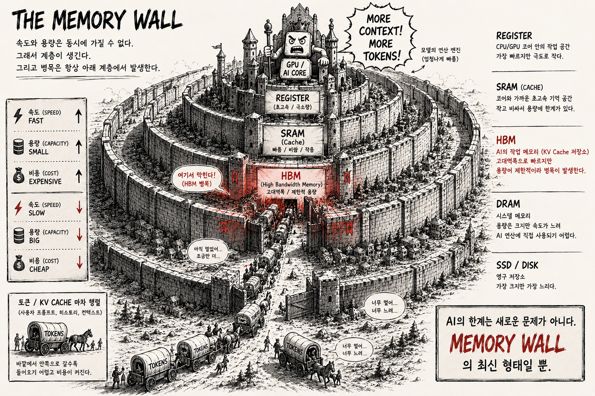
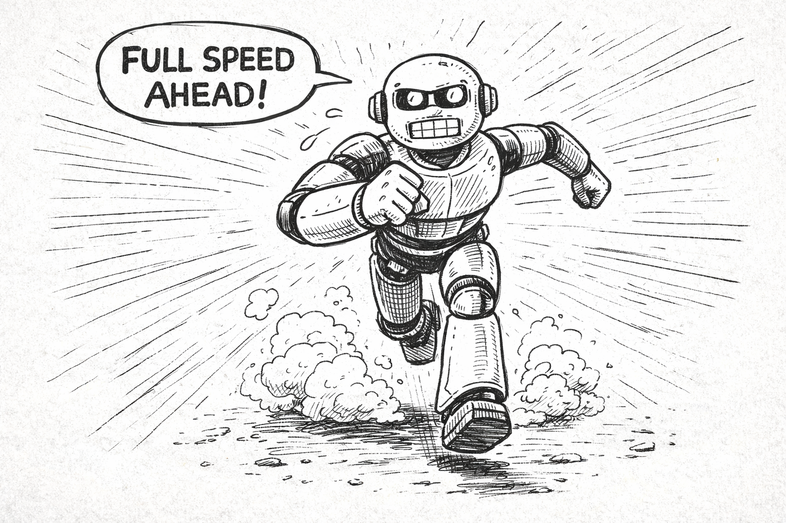
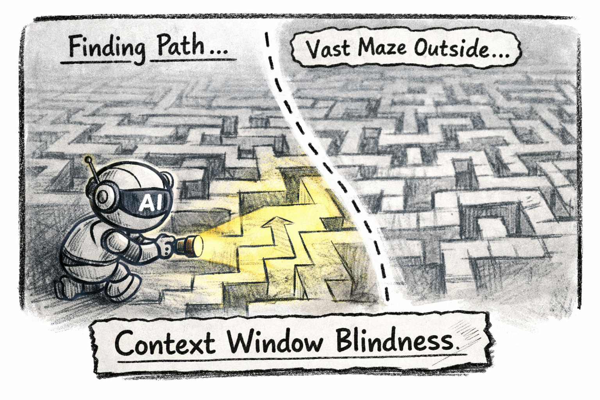

왜 한계가 발생하는가모든 것은 HBM에서 시작된다
AI의 한계는 "아직 부족해서"가 아니다. 물리 법칙이 만든 천장이다.
"더 좋은 모델이 나오면 해결될까?"
시리즈 1에서 AI의 한계를 세 가지 벤치마크로 확인했다. 건초더미에서 바늘을 못 찾고, 세차장에 걸어가라고 답하고, 보이지 않는 코드는 존재 자체를 모른다.
이런 한계를 볼 때마다 나오는 반응이 있다. "더 좋은 모델이 나오면 해결되지 않을까?"
답은 아니다. 이 한계는 모델의 지능 문제가 아니라 물리적 제약에서 발생한다. 하드웨어의 구조적 한계다. 그리고 그 출발점은 HBM(High Bandwidth Memory, 고대역폭 메모리) — H100·A100 같은 AI 추론용 GPU에 탑재되는 메모리다.

HBM — AI의 조리대
LLM을 이야기할 때, 대부분의 논의는 "어떤 모델이 더 똑똑한가"에서 시작된다. 하지만 실무에서 AI를 쓰다 보면, 진짜 병목은 모델의 지능이 아니라 컨텍스트라는 사실을 깨닫게 된다.
LLM에게 컨텍스트 윈도우는 "작업 공간"이다. 사람으로 치면 조리대 위에 올려놓을 수 있는 재료의 양이다.
- 조리대에 올려놓은 재료만 보고 요리한다
- 조리대에 없는 건 아무리 좋은 재료라도 쓸 수 없다
- 조리대가 아무리 넓어도, 무한히 넓어지진 않는다
그런데 이 조리대의 크기는 어디서 결정되는가? GPU의 HBM이다.
[ GPU HBM ] = [ Model Weights ] + [ KV Cache ]
고정 크기 토큰마다 증가
모델 자체의 무게 ← 이것이 컨텍스트의 물리적 실체HBM은 AI 추론용 GPU에 탑재되는 3D 적층 고대역폭 메모리다. 이 메모리 안에 모델의 가중치(Weights)와 컨텍스트 처리를 위한 KV Cache가 함께 들어가야 한다. 모델 가중치는 고정 크기지만, KV Cache는 토큰이 늘어날 때마다 함께 커진다.
HBM이라는 물리적 공간이 유한한 한, 컨텍스트도 유한하다. 이것이 모든 한계의 출발점이다.
KV Cache — 컨텍스트의 물리적 실체
"컨텍스트 윈도우"라는 말을 자주 쓰지만, 이것이 물리적으로 어떻게 존재하는지 아는 사람은 드물다. 그 실체가 바로 KV Cache(Key-Value Cache)다.
KV Cache가 하는 일
LLM이 텍스트를 생성할 때, 이전에 처리한 모든 토큰의 정보를 어딘가에 저장해야 한다. 그래야 "이전에 뭘 말했는지" 기억하면서 다음 토큰을 생성할 수 있다.
이 정보가 저장되는 곳이 KV Cache다. 모델이 처리한 모든 토큰에 대해 Key 벡터와 Value 벡터가 HBM에 저장된다.
토큰 1 → [K₁, V₁] 저장
토큰 2 → [K₂, V₂] 저장
토큰 3 → [K₃, V₃] 저장
...
토큰 N → [Kₙ, Vₙ] 저장 ← 토큰마다 HBM 소비가 선형 증가선형 증가의 의미
토큰이 하나 늘어날 때마다 KV Cache도 일정량만큼 커진다. 이 증가는 선형이다. 10K 토큰이면 X만큼, 100K 토큰이면 10X만큼, 1M 토큰이면 100X만큼의 HBM을 KV Cache가 차지한다.
구체적인 숫자로 보면:
모델: 70B 파라미터, 80 레이어, 64 어텐션 헤드, 128 차원
KV Cache per token = 2(K+V) × 80(레이어) × 64(헤드) × 128(차원) × 2(FP16 바이트)
≈ 2.6 MB per token (배치)
128K 토큰 → 약 40 GB KV Cache
1M 토큰 → 약 320 GB KV Cache ← 단일 GPU로 불가능컨텍스트 윈도우가 128K에서 1M으로 늘어난다는 건, KV Cache가 차지하는 HBM도 8배로 늘어난다는 뜻이다. 물리적 메모리는 그만큼 늘어나지 않는다.
이것이 "컨텍스트 윈도우가 커지면 다 해결된다"가 환상인 이유다. 윈도우가 커지는 비용을 누군가는 치러야 한다. 그리고 그 비용은 HBM이라는 물리적 자원으로 지불된다.
Attention 연산 비용
KV Cache의 메모리 문제만이 아니다. Transformer의 Self-Attention 연산은 시퀀스 길이의 제곱에 비례하는 계산 비용을 가진다.
Attention 연산량 ∝ O(n²)
n = 1K → 1,000,000 연산
n = 10K → 100,000,000 연산 (100배)
n = 100K → 10,000,000,000 연산 (10,000배)컨텍스트가 10배 길어지면, 연산량은 100배 늘어난다. Flash Attention, Sliding Window 등의 최적화 기법이 이 비용을 줄이고 있지만, 근본적인 O(n²) 구조는 변하지 않는다.
컨텍스트를 늘리는 것은 공짜가 아니다. 메모리 비용과 연산 비용, 두 가지 물리적 대가를 동시에 치러야 한다.
Context Rot — 넣을수록 썩는다

KV Cache와 Attention 비용 문제를 기술적으로 해결한다고 가정하자. 메모리와 연산을 무한히 사용할 수 있다면, 컨텍스트를 무한히 넣으면 되는 걸까?
그래도 안 된다. Context Rot(컨텍스트 부패) 현상 때문이다.
Context Rot이란
컨텍스트 윈도우에 들어가는 토큰 수가 증가할수록, 모델이 개별 정보를 정확하게 회상하고 활용하는 능력이 감소하는 현상이다. 이것은 특정 모델의 결함이 아니라, 모든 LLM에서 공통적으로 나타나는 구조적 현상이다.
컨텍스트 사용량 정보 회상 정확도
────────────── ──────────────
10% ████████████ 높음
30% █████████ 양호
50% ██████ 보통
70% ████ 저하
90% ██ 심각한 저하
100% █ 거의 무의미왜 썩는가
Attention 메커니즘의 구조적 특성 때문이다. 토큰이 많아질수록 각 토큰에 할당되는 Attention의 가중치가 분산된다. 초반에 제공된 중요한 정보가 후반의 대량의 토큰에 묻혀버린다.
비유하자면, 조리대 위에 재료를 계속 쌓는 것과 같다. 처음에는 각 재료를 명확히 구분할 수 있지만, 재료가 쌓일수록 밑에 깔린 것은 보이지 않게 된다. 조리대가 아무리 넓어도, 재료를 무한히 쌓으면 결국 아래 것은 잊혀진다.
시리즈 1과의 연결
시리즈 1에서 본 "Needle in a Haystack" 벤치마크의 실패가 바로 Context Rot의 직접적인 증거다. 건초더미(컨텍스트)가 커질수록 바늘(특정 정보)을 찾는 능력이 떨어지는 것 — 이것이 Context Rot이 실전에서 나타나는 방식이다.
컨텍스트는 "수확 체감이 있는 유한한 자원"이다. 많이 넣는다고 좋은 게 아니라, 적절히, 구조적으로 넣어야 한다.
멘탈 모델 vs 컨텍스트 윈도우

이제 물리적 제약이 실제 개발 현장에서 어떤 의미를 갖는지 보자.
시니어 개발자가 대규모 코드베이스를 다루는 방식을 생각해보자. 수천 개의 클래스로 이루어진 시스템의 아키텍처를 이해하려면 클래스 간의 의존 관계, 하드웨어 인터럽트 흐름, 메모리 레이아웃, 타이밍 제약 조건을 머릿속에서 동시에 유지해야 한다.
이 "멘탈 모델"은 수년간의 경험을 통해 형성된다. 그리고 이것은 컨텍스트 윈도우에 담을 수 있는 양을 훨씬 초과한다.
개발자의 멘탈 모델 AI의 컨텍스트 윈도우
────────────────── ──────────────────
수천 개 클래스의 관계 128K~1M 토큰의 텍스트
수년간 축적된 아키텍처 이해 현재 세션의 정보만
하드웨어-소프트웨어 경계 인식 코드 텍스트만
"왜 이렇게 설계했는가"의 히스토리 "지금 보이는 것"만
JTAG, 오실로스코프로 본 실제 동작 코드 레벨의 추론만
동료와의 대화에서 얻은 암묵적 지식 명시적 텍스트만이 차이는 단순히 "양"의 문제가 아니다. 차원이 다르다.
개발자의 멘탈 모델은 텍스트가 아니다. 공간적 구조, 시간적 흐름, 물리적 제약, 인간 관계 — 이런 다차원적 정보가 압축되어 있다. LLM의 컨텍스트 윈도우는 기본적으로 1차원 텍스트 시퀀스다. 아무리 길어져도 차원이 바뀌지는 않는다.
AI가 아무리 똑똑해져도, HBM 위의 KV Cache에서 돌아가는 한, 개발자의 멘탈 모델을 통째로 담을 수 없다. 그리고 개발은 코딩만이 아니다. JTAG 디버깅, 오실로스코프로 파형 분석, 칩 에라타 확인 — 이런 것들은 컨텍스트 윈도우 밖에 존재하는 물리적 세계의 영역이다.
AI의 "기억력"은 하드웨어의 물리적 크기에 묶여 있다. 그리고 그 물리적 크기는, 개발자가 수년간 쌓아온 이해의 깊이에 비하면 아직 한참 작다.
물리적 제약을 인정한 다음
정리하면 이렇다.
HBM이 유한하다
↓
KV Cache가 토큰마다 선형 증가한다
↓
컨텍스트 윈도우에 물리적 천장이 있다
↓
넣을수록 Context Rot으로 성능이 떨어진다
↓
개발자의 멘탈 모델은 이 윈도우에 담기지 않는다
↓
∴ AI는 구조적으로 "전체를 보는 것"이 불가능하다이것은 현재 기술의 미성숙이 아니다. Transformer 아키텍처의 물리적 구조에서 비롯된 근본적 제약이다. 더 큰 GPU가 나오고, 더 효율적인 Attention이 개발되어도, 유한함 자체는 사라지지 않는다.
그래서 전략이 필요하다.
물리적 제약을 부정하거나 무시하는 대신, 인정하고 그 안에서 최대의 효과를 뽑아내는 접근. 같은 모델이라도 어떻게 쓰느냐에 따라 완전히 다른 결과가 나온다.
이 "어떻게"에 대한 답이 세 단계로 진화해 왔다. 프롬프트 엔지니어링에서 컨텍스트 엔지니어링으로, 그리고 하네스 엔지니어링으로.
다음 편 예고
물리적 한계를 인정했다. 그렇다면 그 한계 안에서 AI를 제대로 활용하려면 어떻게 해야 할까?
"말을 잘 하면 되는 거 아냐?" — 프롬프트 엔지니어링의 한계.
"재료를 잘 골라 넣으면 되지" — 컨텍스트 엔지니어링의 한계.
"그러면 뭘 해야 하는데?" — 하네스 엔지니어링의 등장.